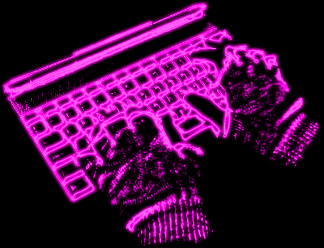

a neon-toned vision of disembodied hacking. thanks to beck for providing the hands, and jason the gloves. the original image was badly warped with various filters, then blurred. the curves command brought out the neon from the blur, and colorize gave it the glow.
as for the title... well, who needs divination? it's the 21st century. we've got silicon.
[back]